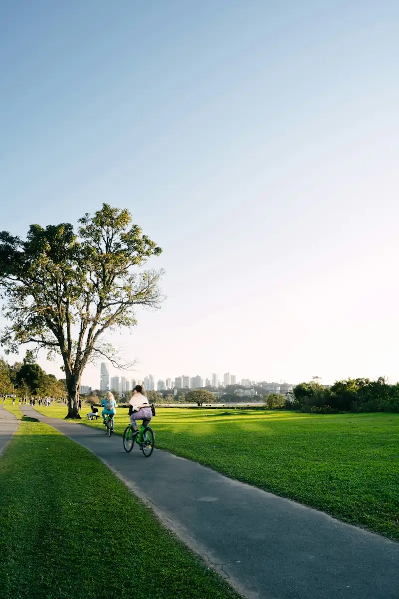
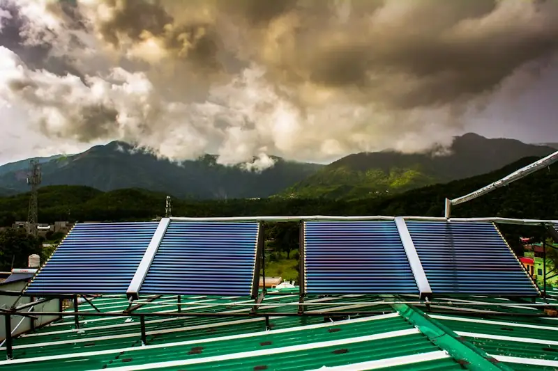

Net Zero
Net Zero is not only a compliance pledge — it is how we learn to live happily and healthily in harmony with nature. Our work focuses on the value chain: Scope 3.
We help companies and their small suppliers cut value-chain (Scope 3) emissions — and show that low-carbon living is healthier living.
Scope 3 first
For most companies, the largest share of emissions lies outside their own walls — in suppliers, logistics, business travel and the way employees commute. That is where Zero Cube concentrates: helping corporates understand their value chain and helping MSME vendors respond.
What we do in Net Zero
- Scope 3 readiness and assessments for corporate supply chains
- MSME vendor footprinting and training
- Employee engagement — commuting, travel and lifestyle footprints
- Net Zero certification under Zero Cube's published criteria for villages, clubs, MSMEs, schools and events
- NetZero villages funded by CSR and donors

Low-carbon living is healthier living
Walking, cycling, plant-rich food and green spaces cut emissions and make us happier and healthier.
See the evidenceNet Zero is not only a pledge — it is a happier, healthier way to live
The choices that cut emissions are very often the same choices that give us cleaner air, stronger bodies, calmer minds and closer communities. We call this Net Zero for Life.
Personal
Walk or cycle short trips, eat more plant-rich home food, waste less, buy mindfully, spend time in nature.
Household
Save energy and water, cook cleanly, segregate waste, avoid single-use plastic, plant and care for trees.
Workplace
Low-carbon commuting and travel, efficient buildings, greener procurement and engaged employees.
Community
Green cover, clean air, shared transport, local green livelihoods and village-level climate action.
What the evidence says
Clean air saves lives
The Lancet Countdown 2025 India data sheet attributes over 1.7 million deaths in India in 2022 to air pollution (PM2.5) from human activities, 44% of them from fossil fuels. WHO notes that cutting emissions from transport, food and energy brings large health gains through cleaner air.
Active travel
Walking and cycling instead of short motorised trips cut emissions and air pollution while adding daily physical activity — a health co-benefit of climate action highlighted by WHO.
Plant-rich diets
The 2025 EAT–Lancet Commission estimates that shifting to its predominantly plant-based Planetary Health Diet could prevent about 15 million deaths a year worldwide, while easing pressure on the planet.
Nature and wellbeing
Trees and green spaces cool neighbourhoods, filter air and give people places to rest and connect — which is why we measure green cover that survives and grows.

Helping MSME suppliers respond to big buyers
Footprints, training and reduction plans for the small businesses in corporate supply chains.
Scope 3 for corporates & MSMEsCertified Net Zero tracks
Zero Cube programme certificates are issued under our own published criteria. Each names its criteria version, boundary and validity.
Village / Gram Panchayat
Energy, land and trees, waste, water and livelihoods; community monitoring; SROI. Free for villages.
Clubs & associations
Club activities, events and operations against published club criteria.
MSMEs & organisations
Inventory, reduction plan and evidence, including Scope 3 readiness for suppliers.
Schools & campuses
Net Zero School / Campus pathway linked to the curriculum.
Events
Event footprint, reduction and credible balancing.
Founders' prior work (2025-26, before Zero Cube was incorporated)
Founders' track record: 34 Net Zero certificates (1 Gram Panchayat, 33 clubs) issued in 2025-26 in association with Rotary District 3131's Environment Team, before Zero Cube was incorporated on 28 September 2026. They are not Zero Cube certificates, and no current partnership or MoU with Rotary is implied.
How certification works — 6 steps and our integrity rules
How certification works
- Enquire & scope — track, boundary and evidence
- Baseline — measure the footprint
- Reduce — implement a reduction plan
- Audit — by an auditor who has not advised you
- Decision — by an independent reviewer
- Certificate & registry — published and verifiable
Integrity
- Published, versioned criteria
- Separation of advice, audit and decision
- Footprint and handprint reported separately
- We do not describe our work as accredited verification or third-party assurance, and our certificates are not government licences or carbon credits
Sources
- GHG Protocol — Corporate Value Chain (Scope 3) Standard
- CDP & BCG (2024) — supply chain Scope 3 emissions 26× operational emissions
- Lancet Countdown 2025 — India data sheet
- WHO — Ambient (outdoor) air quality and health
- WHO — Climate change and health
- EAT–Lancet Commission (2025) on healthy, sustainable and just food systems
- Mission LiFE — Ministry of Environment, Forest and Climate Change, Government of India
- PM launches Mission LiFE, 20 Oct 2022 — pmindia.gov.in
Be part of the change, from wherever you are
Students, teachers, professionals, organisations, villages and the diaspora: anyone, anywhere can join as a Global Climate Citizen. Together, our small actions add up to real change.
Nothing to pay now: membership contributions open once our bank account is active. Free for everyone, always: learn free · take the Pledge · volunteer